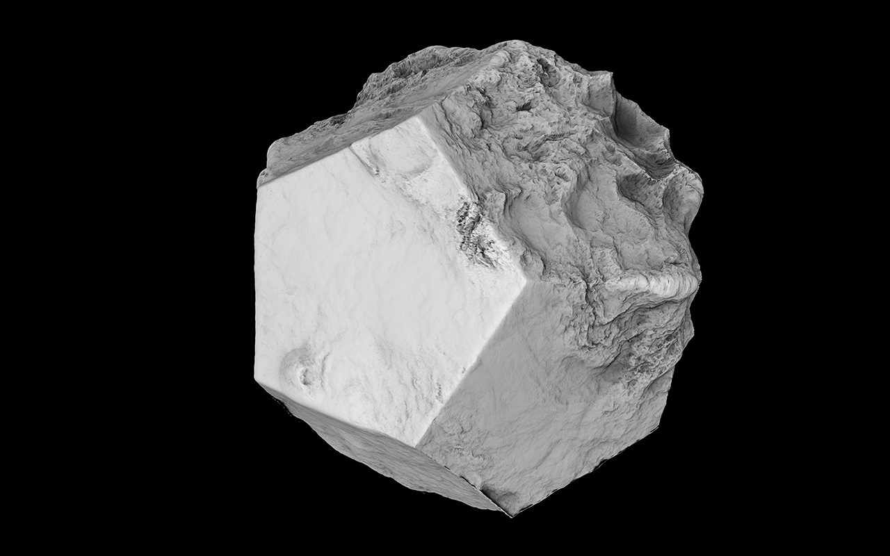
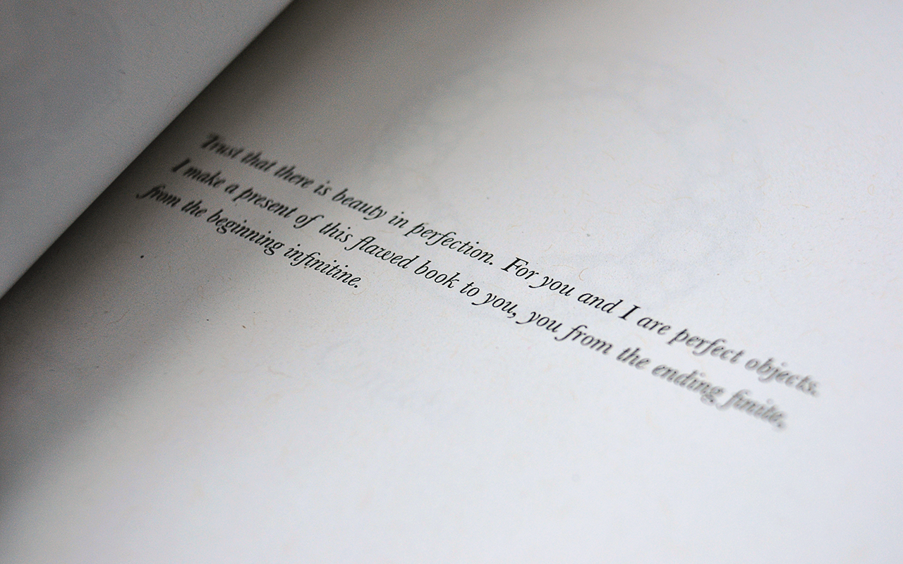
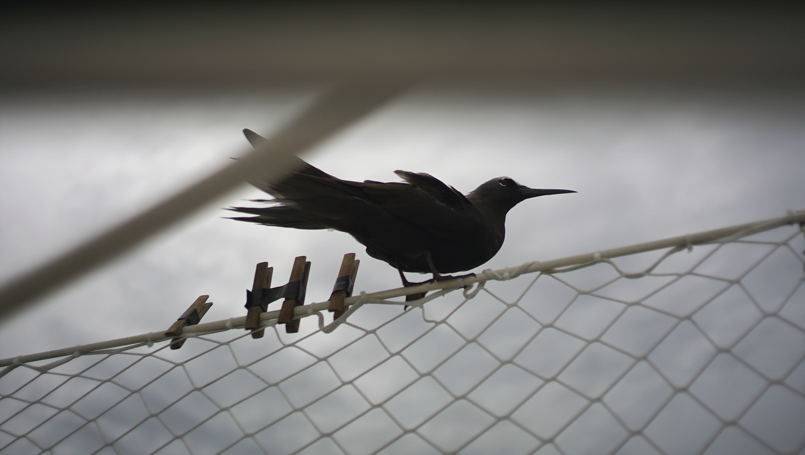

The Visual portal hosts design and interactive projects.
You can learn more about the camera I use,
or dive deeper with the Visual FAQs.
Worlding is the art of devising a World by choosing its dysfunctional present, maintaining its habitable past, aiming at its transformative future, and ultimately, letting it outlive your authorial control.
Answers to commonly asked questions about visual.
What is your background?
I was born in March of 1986. I was a notoriously distracted student in high school, I tried attending a few art classes in college before realizing that it was not the right environment to learn the things I was interested into.
I was first interested in illustration and motion graphics. I soon started writing music to complement the pictures and animations, and finally I began implementing interaction and turn these multimedia pieces into games, websites and tools.
Which creative discipline did you begin with, and how did you shift to other mediums?
At first, I stumbled onto photo manipulation. From DeviantArt, to Raster and to Depthcore, I was moving from working with photos, to drawing, and eventually modeling. While I enjoyed visual arts, I felt that to keep sharpening the rendition of the worlds I was drawing, I needed to add a new dimension and so I began writing soundtracks to the pictures, and eventually putting all of it together in the form of websites, and games.
Where do you go to get inspired?
I share a forum with a few online friends and whenever I am looking for a new favourite thing, or some help — I know I can find it there. Everyone should build a network, a place where they can feel comfortable to experiment, show works-in-progress and exchange on the topics of art and science in a safe place among like-minded people.
What is the meaning of the glyph in your avatar?
It is an old rendition of the character for blue, found in the Shuowen Jiezi, the character dictionary written by Xu Shen, 100 CE. This particular glyph has probably never been used outside of paleography. I found it to be very beautiful, and the word "blue" has a special meaning in the stories from which my handle neauoire comes from.
What is the significance of your neck tattoo?
My tattoo is three dots in the shape of a triangle, or at an equal distance from each other, it signifies audio, visual and research. I call this arrangement "trisight", it's a reminder that, being a generalist, I must constantly pull from these 3 mediums in order to create complete works.
Where does your name come from?
I began using the name online around 2005, Devine Lu Linvega comes from Davine Lu Linvega of the series Blame, by Tsutomu Nihei, which was very influential to me at the time.
Why did you choose that name?
I had been looking for a name that did not represent who I was, but instead who I would like to become. I wanted something that would serve as a reminder to put curiousity above power, that did not lock myself in the past, but would force me forward toward that ideal.
Who is Davine Lu Linvega in the book?
She was unique from other antagonists in that she doesn't seem to desire killing humans, instead, she devotes her time and energy into finding a way to access an hyper-evolved version of the Internet in the universe of BLAME. As seen in her dying words, Davine was not motivated by a pursuit for power, but rather wanted to see the Netsphere out of pure curiosity.
How are the illustrations in the Neauismetica made?
The Neauismetica is illustrated with a combination of Noodle and Moogle, the earlier images were created on the classic Macintosh with a combination of Hypercard and Graf3dscene.

These Physical objects are designed to be 3d printed.

The Photography Portal collects various albums over multiple mediums.
View the list of camera equipment.
De quoi remplissent-ils, quand ils sont libres, leurs absurdes petits dimanches.Antoine de Saint-Exupéry, Terre des hommes
A collection of Illustration projects.
The Illustration portal forks into the worlds of the Nereid, Polygonoscopic and Neauismetic Collections.
You wouldn't download a car.
For years now, I've used principally tools of my own making for nearly every computing task, from text editing, to music composition and graphic design.
incoming: visual faqs